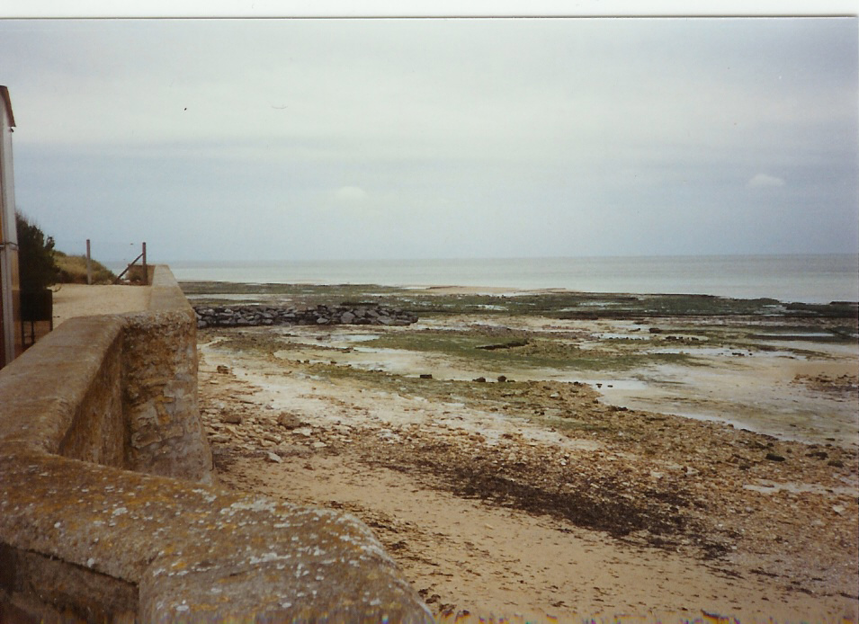
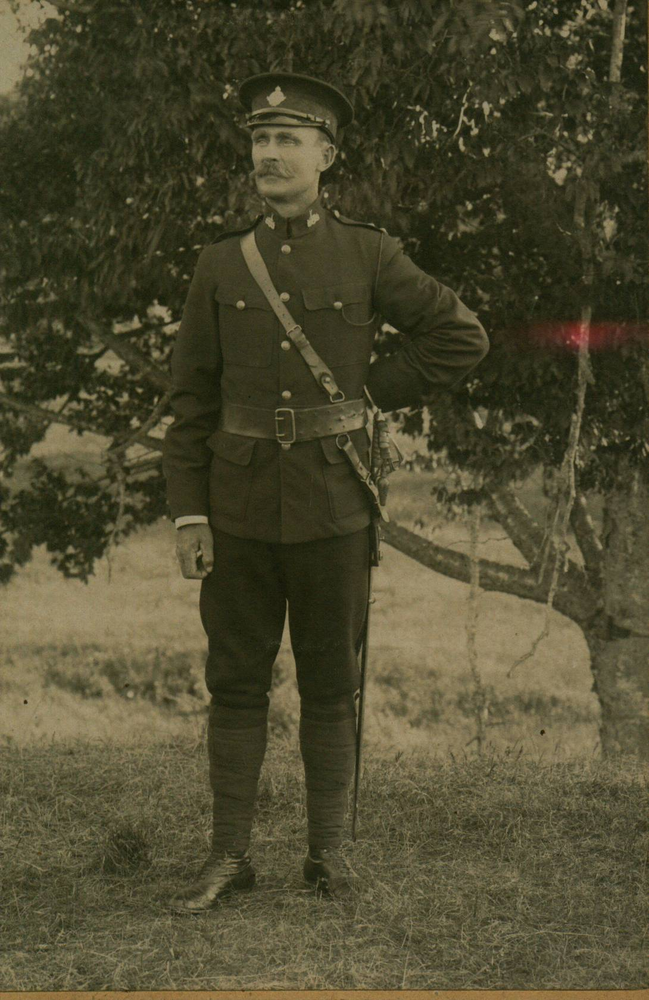
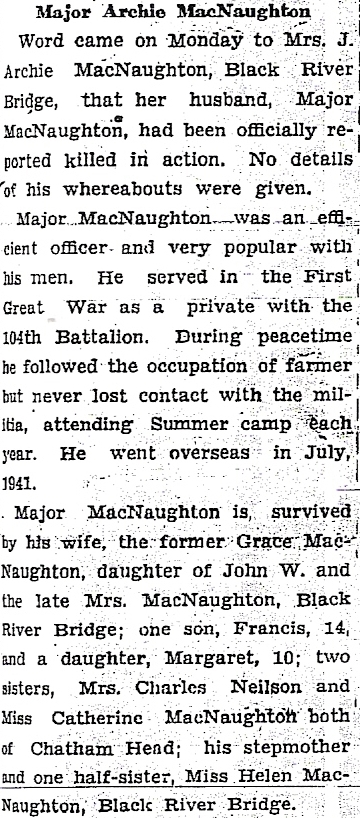
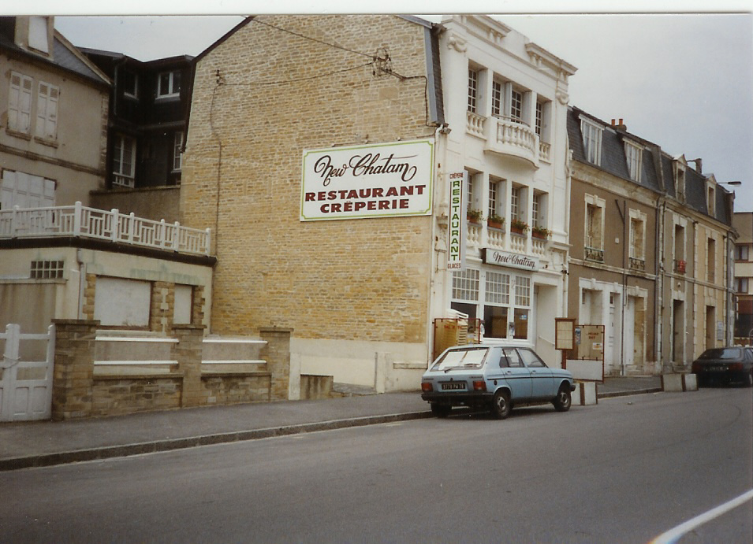
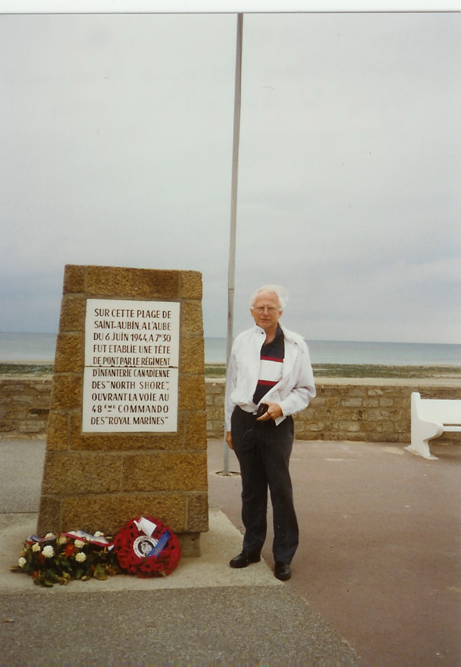

The Family Chronicle
No. 175 June 6, 2009
___________________________________________________________________

Juno Beach, Normandy, France
where North Shore Regiment landed on D-Day, June 6, 1944
Memories of D-Day
The following recollections of D-Day by Shirley MacKay were contained in a note sent to Francis MacNaughton, son of Archie and Grace MacNaughton and is included here with Shirley’s permission. (For younger readers, I’ve added the names in brackets)
“Today is D Day, and I remember that day in 1944 very well, I was living at Aunt Mames' (Mrs. John A. MacNaughton’s), and was sharpening my pencil in school and looking out the window, and there coming down the road was Grampie (John W) MacNaughton’s car, always most recognizable - the color no doubt, and right behind him was that man that came with the news of our people in the war.
They turned in by the (Cameron) school and went over to your home, (home of Archie and Grace MacNaughton). Margie ( a sister to Francis) was
there in school with me, so I went up and told the teacher what I had seen, and was told to keep quiet until we heard the news.
I know someone went down and got you at the high school, I don't remember if they brought Helen (MacNaughton) and Fraser (MacKay) home also. I also remember the memorable service they had at the graveyard.
When school was over I went home to find Aunt Mame crying and getting the seed potatoes ready for planting, and she told me that your father (Archie MacNaughton) was supposed to come home because of his age, (He had also served overseas in WW1) but he asked to lead his men this time for this event, we were told later by a person in the North Shore Regiment that he put his hand up to his men "Follow Me" and was shot through that hand and then through the chest.”

Major John Archibald (Archie) MacNaughton
1896-1944

My recollection
I was a student at MRHS on D-Day and reported my recollections in an earlier Family Chronicle. In short, I remember a car coming for Francis, a hush going through the school and word that Archie had been killed.

This restaurant is located where the North Shore Regiment came ashore – presumably the name is associated with the soldiers who landed there.

Don in 1991 at monument erected by local townsfolk; there is an official North Shore monument but, unfortunately, I did not find it.
The Family Chronicle (Copyright) is an occasional newsletter published by Don Glendenning and posted on the family website. It is intended to share information about my family, community and the times in which I grew up. While every effort is made to be accurate, errors are likely to occur. Comments, enquiries and information may be sent to 62 Queen Elizabeth Drive, Charlottetown, PEI, C1A 3A9. Tel: 902 892 5859. Email: don@glendenning.net Web: www.glendenning.net/don